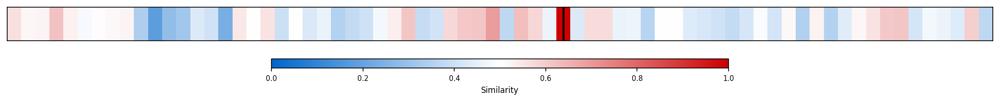
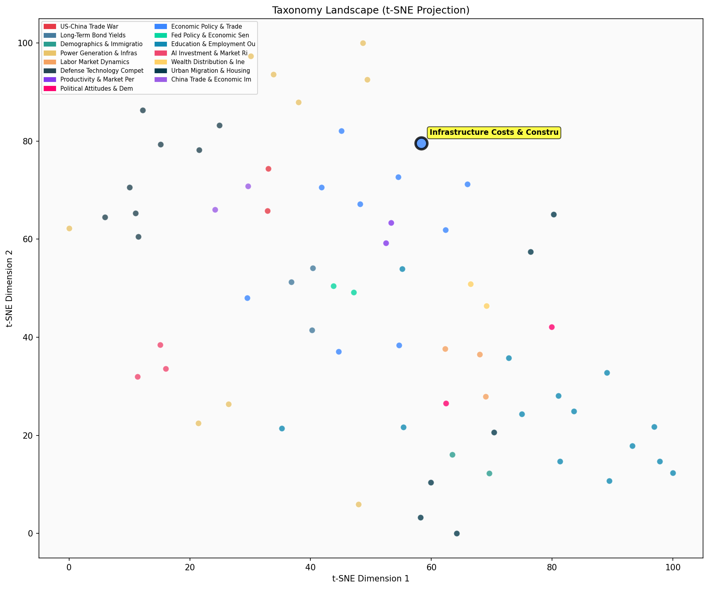

Description
This subcluster examines the underlying factors driving high infrastructure construction costs in the United States, with particular focus on comparative analysis against international peers. Articles analyze specific cost metrics, regulatory frameworks, and efficiency bottlenecks in public transit, highway construction, and transportation infrastructure projects. Common data sources include state transportation department surveys, international cost comparisons, and quality-adjusted price indices. The analysis encompasses both public sector inefficiencies and private market dynamics, including manufacturing monopolies and procurement regulations. Unlike sibling subclusters focused on broader economic performance or fiscal policy frameworks, this collection specifically diagnoses operational and structural causes of construction cost inflation rather than macroeconomic trends.
Similarity to All 70 Subclusters
Each cell represents a subcluster. Color intensity shows similarity (blue=low, red=high). Black line marks current subcluster position.
Relationship to Primary Clusters
Average similarity to each of the 15 primary clusters. Larger area = stronger relationship to that cluster.
Taxonomy Landscape
All 70 subclusters positioned by similarity (t-SNE). Current subcluster highlighted with label. Click to enlarge.
Network Connections
Current subcluster at center, connected to related subclusters. Line thickness = similarity strength.
Most Representative Articles
-
1. US infrastructure projects are expensive, with average costs reaching $1,601m per mile, compared to
-
2. US infrastructure projects have a history of significant cost overruns & delays, with 92% of global
-
3. The U.S. faces a significant construction cost issue in infrastructure projects, with the Seattle tu
-
4. @JasonFurman Despite low levels of public investment in transportation infrastructure, the U.S. has
-
5. .@ernietedeschi & @vannostrand criticize @jasonfurman’s use of the National Highway Construction
Edge Cases (Boundary Articles)
-
1. In the US, prices of private vehicles have dropped 40% (quality adjusted) since 1995, but costs of UThis article is borderline because while it analyzes cost efficiency in transportation infrastructure (transit buses), it focuses specifically on manufacturing and procurement policy issues rather than the broader construction cost drivers that characterize the main cluster. The piece examines vehicle manufacturing economics and trade policy impacts rather than the infrastructure construction processes and comparative cost analysis that define the subcluster's core focus.
-
2. .@jburnmurdoch notes that American and British infrastructure costs are far higher than other advancThis article is borderline because while it directly addresses high infrastructure costs in advanced economies (fitting the cluster theme), it only briefly mentions the topic through a Twitter reference and focuses narrowly on "Nimbyism" and environmental reviews rather than providing the comprehensive cost analysis and international comparisons that characterize the cluster. The superficial treatment and social media format make it less substantive than typical infrastructure cost analysis articles, explaining its low similarity to the cluster centroid.
-
3. New York City’s elevated infrastructure costs relative to peers such as Paris are due to “stationaryThis article is borderline because while it addresses high infrastructure costs (a core cluster topic), it focuses primarily on political economy explanations like "stationary bandits" and public sector unions rather than technical construction efficiency factors. The article's emphasis on wealth extraction and labor politics makes it nearly as relevant to metropolitan economic dynamics as to infrastructure cost analysis.
Original Dendrogram